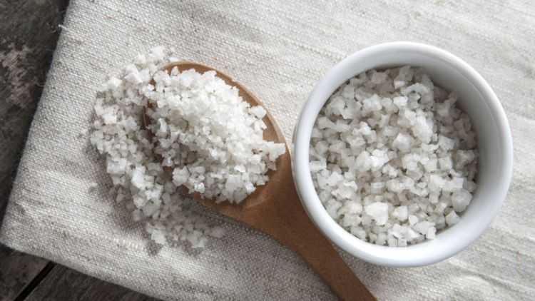

Garam Tak Hanya Bisa Menyedapkan Masakan, 8 Manfaat Tersembunyi Ini Patut Kamu Tahu Mulai Sekarang
Garam adalah salah satu bahan masak paling pokok yang selalu nongkrong di dapur. Semua masakan jadi lebih lezat dengan tambahan zat berikut ini. Namun, ternyata garam tak cuma bermanfaat untuk masak lho. Bahan masakan yang murah meriah ini juga bisa dijadikan sebagai senjata untuk merawat kecantikan wajah dan barang-barang lho.
Gak percaya? Berikut ini Busep berikan ulasan manfaat tersembunyi dari garam yang biasanya ada di dapur. Simak baik-baik ya.
1. Garam tak hanya bikin masakan makin lezat, namun juga mencegah wajah kering dan berminyak.
Tampil cantik itu gak harus mahal, kamu juga bisa mengandalkan garam dapur yang harganya murah untuk mempercantik wajah. Kandungan dalam garam ampuh mengatasi kulit kering dan berminyak lho. Caranya, campurkan 1 sendok teh garam dalam 400 ml air hangat. Lalu masukkn dalam botol semprot. Semprotkan cairan ini pada wajah 2 kali sehari. Nah, larutan garam bisa meremajanan kulit wajah. Gak heran, kulit jadi lebih lembab dan tak berminyak.
2. Furniture berbahan rotan akan selalu terlihat baru hanya dengan semprotan larutan garam setiap pekan
Jika kamu menggunakan perabot berbahan rotan, maka semakin hari kayu rotan akan terlihat menguning. Untuk mengatasinya, kamu bisa manfaatkan garam sebagai senjatanya. Cukup buat larutkan garam. Lalu gunakan untuk melapisi kayu rotan. Agar lebih kinclong, gosok perlahan dengan kain. Meski sudah berusia lanjut, furniture rotanmu tetap terlihat baru.
3. Seduhan kopi atau teh seringkali meninggalkan noda di cangkir. Garam dapur yang harganya murah bisa kamu gosokkan untuk mengenyahkannya.
Kamu pecinta kopi atau teh? Pasti kamu akan menemukan noda-noda coklat di dalam cangkir kesayangan. Hal ini seringkali bikin kamu malu saat menyajikannya pada tamu. Agar cangkirmu tetap bersih, gosokkan garam dapur menggunakan kain atau spon sampai noda menghilang. Lalu biarkan beberapa saat dan bilas dengan air. Sekarang cangkir-cangkir di dapur selalu tampak baru. Minum kopi juga jadi lebih nikmat dan tak perlu sungkan saat menyajikannya pada tamu.
4. Wastafel atau saluran air sering mampet? Guyurkan saja larutan garam. Aliran air bisa kembali lancar
Saluran air seperti wastafel, paralon, atau toilet yang mampet sering kali bikin pusing dan merepotkan. Sebelum memanggil tukang untuk memperbaikinya, cobalah kamu atasi dulu dengan garam. Buat larutan garam 1 : 1, misalnya 500 gram dalam 500 ml air. Lalu siram ke dalam lubang yang mampet. Kemudian tunggu kira-kira 2 jam agar partikel garam melarutkan bau apek dan minyak yang mengganjal. Dengan sekejap, saluran air kembali lancar. Kamu pun tak akan lagi kerepotan.
5. Musnahkan bakteri jahat di daerah gigi dan mulut dengan larutan garam. Dijamin resiko sakit gigipun bisa ikut menghilang.
Jika garam pada masakan bisa bikin lidahmu dimanja, maka larutan garam yang digunakan untuk berkumur juga bisa bikin gigimu tetap sehat. Masukkan setengah sendok makan garam dalam segelas air matang. Lalu gunakan untuk berkumur-kumur selama 30 detik. Nah, larutan ini bisa membuat gigimu tetap sehat. Kandungan halogen dalam garam bisa memusnahkan bakteri pada mulut dan gigi. Selain itu, garam juga bisa bikin gigimu lebih kuat. Dengan begitu, resiko sakit juga pergi. Eits, resep ini juga bisa kamu terapkan saat sakit gigimu kumat lho.
6. Jangan biarkan jerawat bikin penampilanmu tak maksimal. Usir tonjolan itu dengan larutan garam.

Jerawat seringkali bikin kepercayaan diri jadi mereduksi. Tanpa harus menyerahkan diri pada bahan-bahan kimia, gunakan saja garam yang lebih alami. Larutkan seperempat sendok garam pada satu tutup botol air hangat. Lalu celupkan cutton bud dan gunakan untuk olesan di sekitar jerawat. Perlahan-lahan, radang di jerawat dan benjolan ini bisa menghilang. Kandungan belerang dan potasium dalam garam bisa ampuh menyeimbangkan air dan membunuh bakteri di kulit wajah. Kini, kamu bisa kembali tampil maksimal saat melenggang.
7. Taburkan sedikit garam pada sepatu sneakersmu secara berkala, bau tak sedap pasti tak lagi ada.
Karena kondisi kaki yang lembab dan gak menggunakan kaos kaki, sepatu kanvas atau sneakers seringkali jadi bau apek. Apalagi jika sepatu ini kamu gunakan untuk berolahraga, campuran keringat bikin sepatu makin tak karuan. Selain pakai silika gel, kamu bisa mengandalkan garam dapur. Masukkan sejumput garam ke dalam sepatu secara berkala. Misalnya seminggu sekali saat gak digunakan. Jangan lupa diangin-anginkan ya. Jika kamu rutin melakukannya, gak mustahil bau tak sedap akan lenyap.
8. Agar bunga dari sang kekasih tetap segar dalam waktu lama, celupkan saja pada kanvas yang berisi garam
Garam tak melulu digunakan sebagai penyedap makanan lho. Bahkan bahan ini juga ampuh untuk mengawetkan bunga-bunga dari orang tercinta. Caranya, pertama-tama buat larutan garam di dalam vas bunga. Lalu potong bagian batang dan celupkan. Nah, senyawa dalam garam bisa bikin bunga tetap segar. Jadi pemberian orang tercinta bisa bertahan lebih lama.